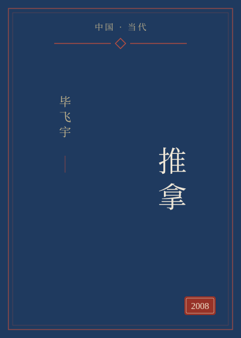
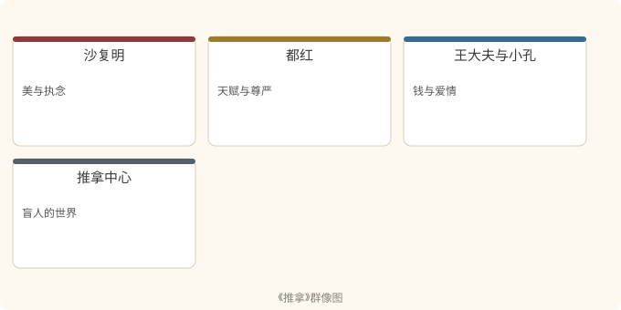

推拿
一、基本信息
| 作者 | 毕飞宇 |
|---|---|
| 成书/出版 | 第八届茅盾文学奖获奖作品（中国作家网官方名单 C012：人民文学出版社；C022：'《推拿》获第八届茅盾文学奖'） 汪政：毕飞宇的目光（中国作家网）（官方文学机构） |
| 国别/地区 | 中国 |
| 时代 | 现当代 · 当代 |
| 体裁 | 长篇小说 |
| 语言 | 汉语（白话） |

《推拿》群像图（主题·结构图）
二、创作背景
中国作家网（C022）：'毕飞宇将盲人作为主人公，因为盲人的自尊心是骇人的'；'以正面的方式书写了人的尊严，歌颂了人性的光辉'。
题材：南京一家盲人推拿中心的群像（沙宗琪推拿中心说——通说待核）。
三、内容脉络
盲人推拿师群像：沙复明、王大夫、小孔、都红、小马等（人物名通说待核）。
'美'的命题：都红之美与盲人对美的想象（通说待核）。
四、主要人物表
| 人物 | 身份 | 说明 |
|---|---|---|
| 沙复明 | 老板 | 对'美'的执念（通说待核） |
| 都红 | 推拿师 | 钢琴天赋改行（通说待核） |
| 王大夫与小孔 | 情侣 | 钱与婚（通说待核） |
五、主题与艺术特点
- 尊严：'盲人的自尊心是骇人的'（C022）。
- 健全人对'黑暗'的想象与盲人的日常（通说）。
- 劳动与身体的正面书写（通说）。
六、影响与评论
- 中国作家网：'《推拿》获第八届茅盾文学奖'；'以正面的方式书写了人的尊严'（C022）。
汪政：毕飞宇的目光（中国作家网）（官方文学机构） - 中国作家网官方名单：第八届茅盾文学奖获奖作品、人民文学出版社（C012）。
历届茅盾文学奖获奖作品一览（中国作家网）（官方文学机构）
七、阅读建议
难点
- 盲人视角的感官描写。
- 人物众多——先画人物表。
- 《推拿》（人民文学出版社，C012 官方名单口径）。
对照娄烨电影（2014年——通说待核）。
八、待核实
- 人物名与推拿中心名核对。
- 2008年9月人民文学出版社初版核对。
- 娄烨电影改编细节待核。
本页主要来源
毕飞宇的其他收录作品：推拿